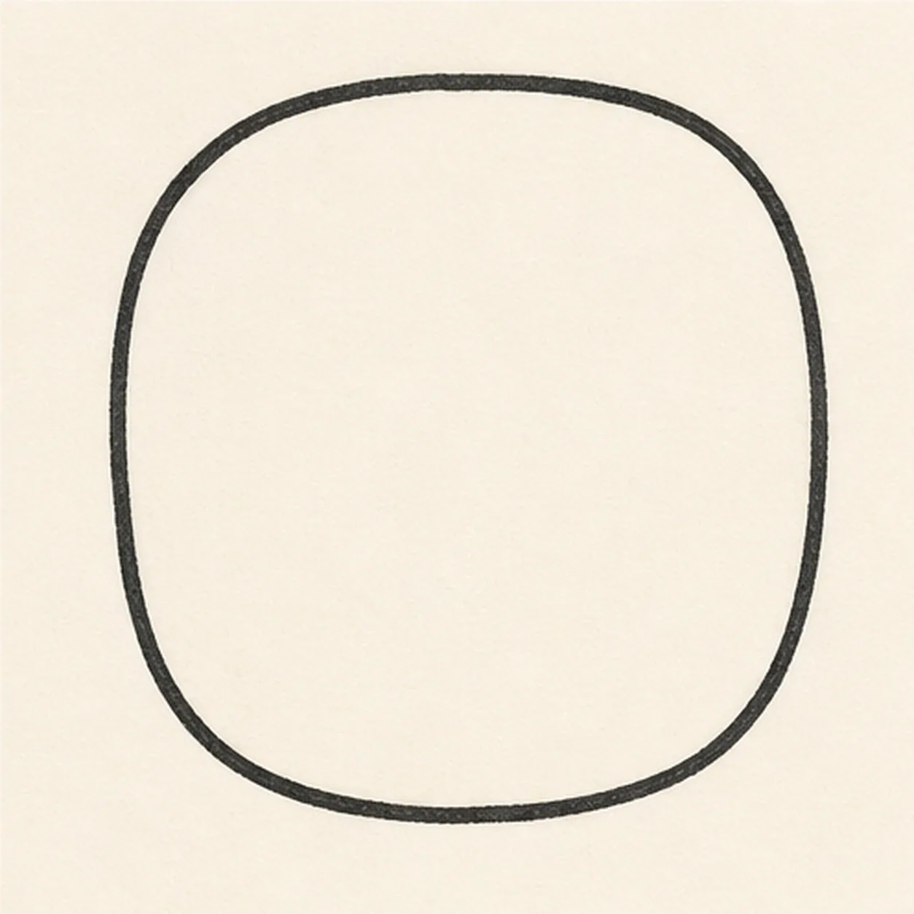
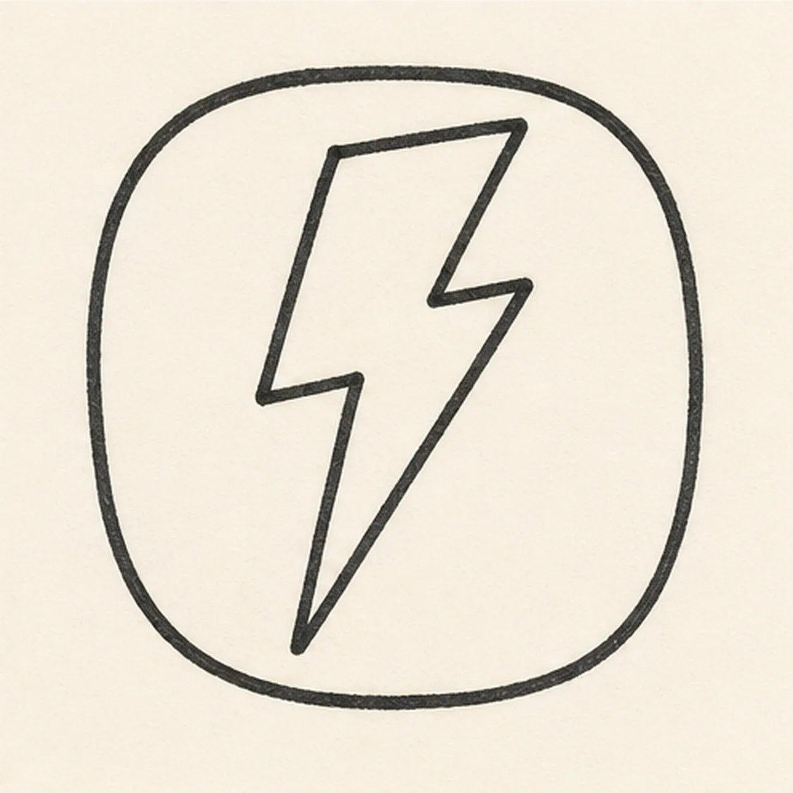
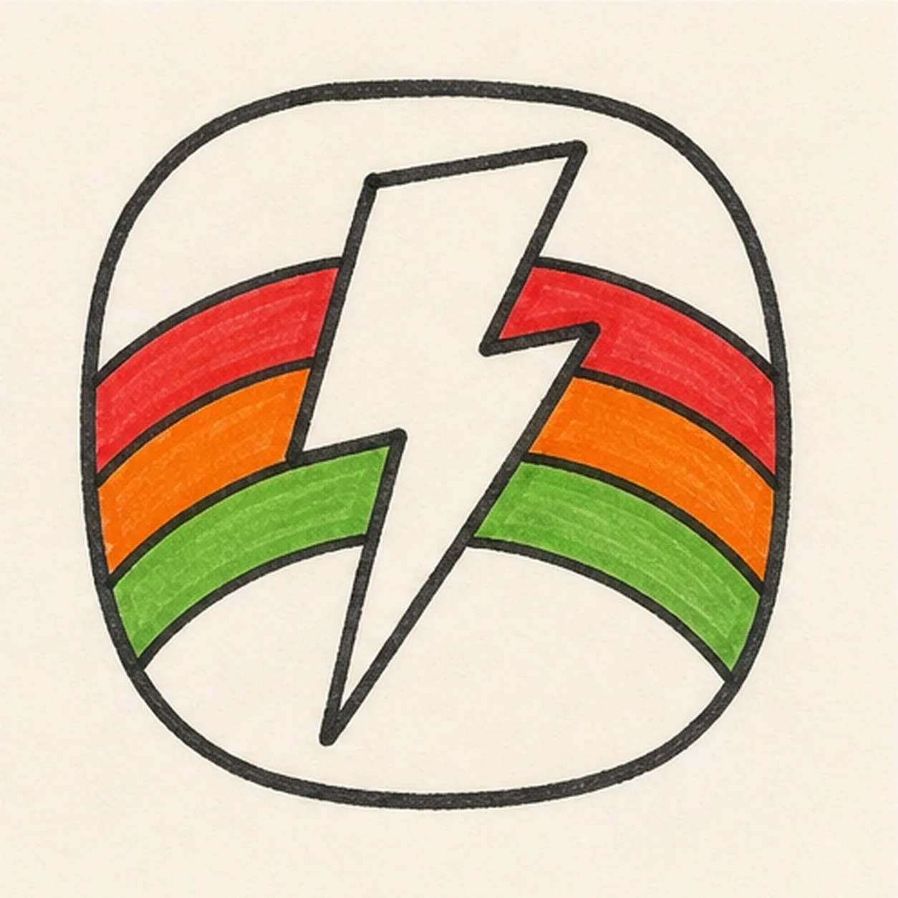
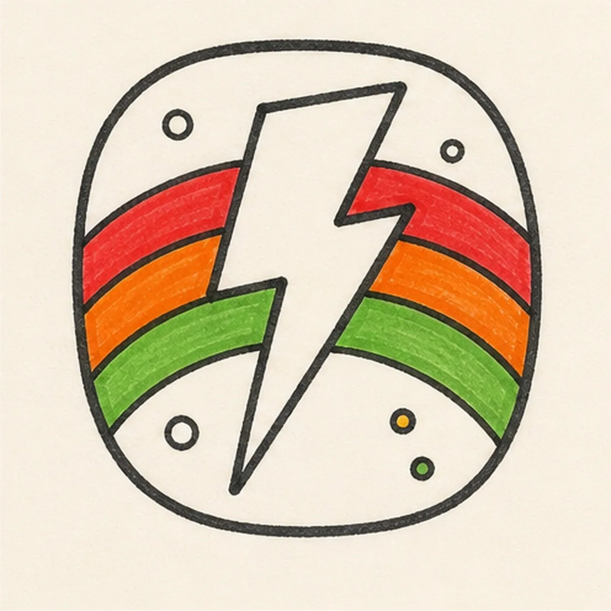
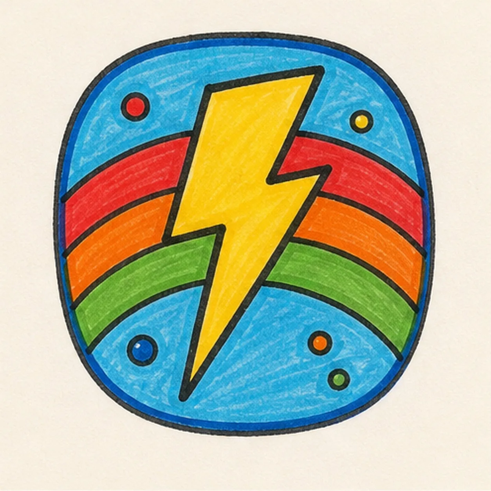

Felt-tip marker mode
Let's doodle a lightning bolt badge
Treat this as one playful practice round: sketch the idea loosely, simplify the shapes, then commit with confident marker outlines and bright fills.
-
01

Draw the badge shape
Draw a rounded square badge, like a soft sticker tile.
Doodle tip: Round every corner before you darken the outline. A badge should feel sturdy but not stiff.
-
02

Zap in the bolt
Add one angular lightning bolt down the middle of the badge.
Doodle tip: Make the bolt wide enough to color later. Tiny bolt points disappear once marker outlines get thick.
-
03

Color the rainbow
Curve three rainbow bands behind the bolt, then fill them red, orange, and green.
Doodle tip: Let the bands tuck behind the bolt. That overlap keeps the badge from looking flat.
-
04

Dot the badge
Add small accent dots in the open corners around the bolt and rainbow.
Doodle tip: Keep the dots away from the bolt edges so the main shape stays bold.
-
05

Fill the badge color
Fill the bolt yellow, the badge field blue, and the dots with small bright marker colors.
Doodle tip: Color around the rainbow edges slowly. Clean color boundaries make the sticker shape pop.
-
06

Charge up the badge
Retrace the existing outlines, deepen the blue, yellow, and rainbow fills, and add tiny highlights only to shapes you already drew.
Doodle tip: Keep the finish punchy but simple. Extra symbols would fight the bolt and rainbow.